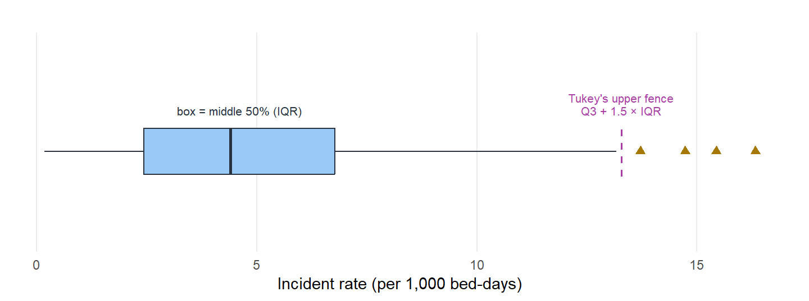

![Two histograms of days from referral to first assessment, sharing an x-axis from zero to about forty-five days and each marked with a vertical magenta line at thirty days. Service A, symmetric: a bell centred near fourteen days that has effectively no values beyond about twenty-three, so the thirty-day line stands in empty space well to the right of all the data. Service B, right-skewed: a tall cluster at shorter waits with a long thin tail stretching past thirty and into the forties, so the thirty-day line falls within the observed tail. Both services share a mean of fourteen days and the same standard deviation.](06-unusual-observations_files/figure-html/fig-same-value-two-contexts-1.png)
6 Unusual Observations
6.1 When a Value Stands Out
The chapter on distribution shape closed on a question it could raise but not settle: when is a value out in the tail simply the shape of the data, and when is it genuinely unusual? A right-skewed waiting-time distribution is meant to throw up the occasional very long wait; a heavy-tailed measure of incident severity is meant to spike now and then. Knowing the shape tells you that extremes will occur. It does not tell you which extreme, sitting in front of you now, has earned a second look.
That is this chapter’s work. An unusual observation – the everyday word is outlier – is a value that stands apart from the rest of the data: a waiting time far longer than the others, an incident rate well above a provider’s peers, a staffing level far below comparators. The single most important thing to understand about such values is also the most easily forgotten: there is no universal definition of “unusual.” What counts as extreme depends on the question you are asking, the data you are asking it of, and the context you are asking it in. The same number can be a glaring anomaly in one analysis and an unremarkable case in another.
The figure makes the point sharper than words can. Both services share a mean of 14 days and the same standard deviation, the two numbers the last few chapters taught you to lead with – yet a 30-day wait means utterly different things in each. In the steady service it is off the map, a value the process never otherwise reaches, and it demands an explanation. In the service with a long tail it is exactly the kind of slow case the shape predicts. Read only the centre and the spread and you would treat the two waits the same. The shape, and the context it stands for, is what separates an anomaly from an ordinary extreme.
This is also where the ladder of measurement reappears. “Far from the rest” is sharpest on a quantitative scale, where distance is a real number you can put a figure on. One rung down, on an ordinal scale, you can still call a value unusual – a single Inadequate rating among a provider’s otherwise Good ones stands out by its position even though “how far” has no exact size. At the bottom, on a nominal scale, all that remains is rarity: a category that hardly any cases fall into. The higher the rung, the more precisely you can say not just that a value is unusual but how unusual – which is exactly the precision the line-drawing later in this chapter trades on.
6.2 Why a Value Stands Out
Before you decide what to do with an unusual value, find out why it is unusual – because the common reasons call for opposite responses, and the most damaging mistake in this whole area is to treat them as one. There are three to keep in mind.
A data error is the most common cause in practice, and the cheapest to fix. A decimal point goes missing and 23.4 becomes 234; days are entered where the field wanted hours, so a 3-day stay is logged as 72; a system writes 999 where a value is missing; a copy-and-paste lands one provider’s figures under another’s name. These values are not extreme so much as impossible, and many an alarming outlier simply dissolves once you check the source. The response is to verify, then correct the value if you can or set it aside with a documented note if you cannot. Before you ever investigate a provider for extreme performance, make sure you are not investigating a typo.
A genuine extreme is real, rare, and accurately recorded – the value is right, and it is often the whole point of looking. What lies behind it can be one of two things, and the distinction matters more than it first appears. Some genuine extremes are structural, a standing feature of the provider: a specialist unit that takes the sickest patients, a home serving a uniquely high-dependency population, a service whose casemix simply differs. Others are events – something that genuinely happened and may yet pass: a care home in the middle of an outbreak with high mortality this month, a staffing crisis that drives complaints up, a new infection-control protocol that drives incidents down. The first kind is about who the provider is; the second about what happened to it – and because an event plays out over time, telling it from ordinary fluctuation is the territory of statistical process control (one unusual month may be a blip; six in a row is a different story). Either way the response is the same in spirit: not to fix or remove anything, but to understand the cause and report it. An unusual value is not the same as a bad provider, but it is frequently the signal that sends an analyst to the door.
Mixed populations produce values that are not extreme for their own group but only look extreme once groups are pooled. A hospice quietly included in an analysis of acute hospitals will sit at the far end of almost any mortality measure – not because anything is wrong, but because it is being compared with the wrong things. A 20-bed care home dropped into a comparison of 200-bed nursing homes will scatter far more widely than its neighbours. The response is to compare like with like: stratify by provider type, size, or setting before flagging anyone.
Notice that the three reasons fan out into three different responses – correct the error, understand the genuine extreme, stratify the mixed comparison. That is why “what is causing this?” must come before “what shall I do about it?”
6.3 Where to Draw the Line
Once you accept that “unusual” is relative, the next question is where to put the line – and the honest answer is unsettling: you put it there. There is no threshold handed down by nature, only several reasonable rules that disagree.
The most familiar rule measures distance from the centre: how many standard deviations a value sits from the mean, \(z = (x - \mu)/\sigma\), with the line drawn at a \(z\) beyond 2 or beyond 3. It is intuitive and quantitative, but it leans on the mean and the standard deviation, both of which a large outlier inflates – so an extreme value can quietly drag the line out far enough to hide itself. This is really a family of rules rather than one, and the mean-and-standard-deviation version is simply its most common member: a robust cousin measures distance from the median instead, scaled by the median absolute deviation in place of the standard deviation – the basis of the modified z-score taken up in outlier detection methods – precisely so the outlier cannot inflate the yardstick meant to catch it. A position-based rule sidesteps the centre altogether by counting rather than measuring: flag the top 5%, or use Tukey’s fences and flag anything beyond 1.5 × the IQR from the quartiles. Because it rests on quantiles rather than the mean, it shrugs off the very values it is hunting and copes with skew. A model-based rule asks how poorly a value fits an expectation built from a provider’s characteristics – a residual from a model that already accounts for casemix, size, or acuity – and so flags values that are unusual for their circumstances, not merely large. And a domain rule sets the line from clinical or regulatory knowledge: a mortality figure, a staffing minimum, or a waiting time past which the value warrants attention whatever the statistics say. Each of these is defensible. Each draws the line in a different place.
Before reaching for any of them, though, the cheapest and most often skipped move is simply to look at the data – the same look-first habit the data visualisation chapter pressed. A histogram shows the shape; a box plot turns the five-number summary you met under variation into a compact picture built for spotting stragglers. The box spans the middle 50% – the IQR from \(Q_1\) to \(Q_3\) – with the median marked inside; each whisker reaches to the most extreme value still within 1.5 × IQR of the quartiles; and anything past that is drawn as its own point. Those 1.5 × IQR limits are Tukey’s fences, and the points beyond them are precisely the position-based flags from a moment ago, made visible.

The box plot, and the fences, come from John Tukey’s Exploratory Data Analysis (1977), the work that gave the technique its name. Tukey called the 1.5 × IQR limits the inner fences and a wider 3 × IQR pair the outer fences, beyond which a value is “far out”. Why 1.5? There is no deep theory behind it – it is a convention, and Tukey’s own defence amounted to saying that 1 flags too much ordinary data and 2 misses too many genuine extremes. A box-plot flag is therefore a prompt to look, not a verdict – even faultless data throws the occasional point past the fence.
One refinement matters for regulatory work, and it sharpens the precision argument still to come. The fraction of observations Tukey’s approach flags is not fixed: it drifts with how many you have. A larger dataset will, by the rule alone, produce more flagged points – the mirror image of the small-provider trap below, and another reminder that one fixed rule does not mean the same thing across providers of different sizes. The plain fences also over-flag skewed data, since they ignore the asymmetry the last chapter dwelt on (although, skew-aware versions exist). Set that single fence beside the other rules and the disagreement is plain:
![A horizontal dot plot of about one hundred and twenty provider incident rates, bunched at the low end and trailing off to the right. Three vertical cut-off lines are drawn, each labelled with how many providers it flags: Tukey's upper fence and the mean-plus-two-standard-deviations line sit closer in and flag more providers, while the mean-plus-three-standard-deviations line sits further right and flags only the few most extreme. The three lines fall at clearly different positions, so the set of flagged providers changes with the rule chosen.](06-unusual-observations_files/figure-html/fig-line-is-a-choice-1.png)
This is a researcher degree of freedom in plain sight: the rule and the threshold you pick shape the answer, even though each pick is defensible on its own. The remedy is not to pretend one rule is the “correct” one – it does not exist – but to choose the rule before you look at the data, to say why you chose it, and, when the stakes are high, to show how the verdict shifts under the alternatives. That last move, varying the choice and reporting what changes, is a sensitivity analysis, and it is the antidote to quietly trying thresholds until the flagged list looks the way you hoped. The chapter on QA principles makes a discipline of it.
Not every line is the analyst’s to choose, though. In regulation many thresholds are set externally – a national target for desired performance, a contractual minimum, a published standard – and these do real work: they split providers into meeting or missing the mark, and they feed methods such as z-scores measured against an external target and the banding that sorts providers into performance groups (taken up in z-scoring). An external threshold spares you the choice but not the responsibility. A cut-off still has consequences – who is investigated, who is judged to have fallen short – so it needs a justification, and the justification worth trusting is rarely the tidiness of the number. It rests on domain and clinical expertise about what level genuinely matters, not on the fact that 2, or 95%, or 10 makes for a round figure.
6.4 Small Providers and the Precision Trap
One mixed-population case is so common, and so often misread, that it deserves its own warning: the small provider. Small denominators make rates swing wildly for reasons that have nothing to do with quality or exceptional circumstances. One incident in a 20-bed home is a 5% rate; one incident in a 200-bed home is a 0.5% rate. The smaller home looks ten times worse, yet both had a single incident. The difference is the denominator, not the care.
![A scatter plot of observed incident rate per 100 against provider size on a logarithmic axis. All providers share a true rate of 5 per 100, marked by a solid dark centre line. A grey band, the funnel control limits, is very wide at small sizes on the left and narrows towards the centre line as size grows to the right. Points scatter widely at small sizes and tightly at large sizes. A dashed magenta flat threshold at 8 per 100 runs horizontally across the plot; many small providers rise above it and are drawn as gold triangles, yet they remain inside the grey funnel band, so the size-aware limits flag almost none of them.](06-unusual-observations_files/figure-html/fig-funnel-precision-1.png)
The width of natural variation depends on size, so a single flat line drawn across every provider flags the small ones simply for being small. The fix is to let the limits breathe: widen them for small denominators to match the precision the data can actually support. That is the idea behind a funnel plot, which the chapter on z-scoring develops into a working method – limits that flare out for small providers and close in for large ones, so that a provider is flagged only when it strays beyond what its own size would lead you to expect.
Widening the limits is one route; standardising the measure is the other. Rather than judge raw rates against a moving boundary, you can convert each provider’s value into how far it sits from what its size leads you to expect – a z-score, or a standardised ratio of observed to expected – so that size is folded into the number itself and every provider lands on one comparable scale. The funnel plot and the standardised score are two views of the same idea, and z-scoring is where the book works it through. The detail can wait; the instinct should not – never read a small provider’s raw rate as if it were as solid as a large one’s.
The trap cuts both ways, and the second edge is easy to miss. Small providers are not only prone to false alarms; they are also where a real problem is hardest to detect, because the same wide variation that throws up spurious highs can swallow a genuine signal. A small provider that clears no threshold has not been shown to be safe – it may simply be too small for any statistical rule to be sure. Absence of a signal is not the same as absence of a problem, and “statistical outlier” and “quality outlier” are not synonyms in either direction.
6.5 What to Do About an Unusual Value
The cardinal rule is short: never silently delete an unusual value. Investigate first, then decide – and let the decision follow the evidence rather than the convenience.
Investigation runs along the grain of the three origins above. Verify the data: go back to the source, check the units and the definition, make sure the value belongs to the provider it is filed under. Understand the context: what kind of provider is this, what period does the value cover, is it a one-off event or a standing feature? Look at the pattern: is the value unusual against its peers, against the provider’s own history, or both, and does it stand alone or is it echoed across related indicators? Weigh the regulatory significance: does the value point to possible harm, does it meet a threshold that triggers action, and what is the cost of acting against the cost of doing nothing? Only once you can say why the value is unusual are you in a position to decide what to do with it.
Four responses are worth knowing, and they belong in a deliberate order, default first.
Keep it and document it is the default, and for most regulatory work it is also the finish. When a value is verified and real, the honest thing is to retain it, report it plainly, and explain why it stands out. This matters most when you are describing what exists rather than estimating some underlying parameter: drop the high performers to tidy the picture and you have not cleaned the data, you have biased it, and you have hidden the very providers a regulator exists to notice.
Use robust summaries when a genuine extreme distorts the conventional statistics but you do not want to lose it. The median in place of the mean, the IQR in place of the standard deviation, Spearman’s correlation in place of Pearson’s – each describes the bulk of the data without letting one far-out value set the tone, so you can characterise the typical case and keep the extreme one in plain view.
Transform the scale when the issue is the shape the extremes create rather than any single point – most often a long right tail. Re-expressing a strictly positive, right-skewed quantity on a logarithmic scale pulls the tail in and often restores the symmetry that standard methods assume. The mechanics, and the catch on the way back to the original scale, are set out in the chapter on distribution shape; the thing to carry here is that a transformation reshapes all the data to tame a few values, which is sometimes exactly right and sometimes a quiet distortion.
Remove it is the last resort, justified only when a value is a confirmed, uncorrectable error or belongs to a fundamentally different population – the hospice mistakenly filed among acute hospitals, not the provider whose figure you simply dislike. “It made the results cleaner,” “it was more than three standard deviations out,” and “it did not fit the hypothesis” are not reasons; they are the warning signs of a result being shaped to taste. If you do remove a value, you owe the reader the sample size before and after, a stated rationale, and a sensitivity analysis showing whether the conclusions survive the exclusion. If the flagged list barely moves, say so and proceed with confidence; if it lurches, report both versions and lower your confidence accordingly.
The methods above cover almost everything you will meet. Two further techniques are worth knowing in their own right – genuinely useful in the right place, hazardous in the wrong one.
6.6 Where Unusual Values Lead
This chapter has been deliberately conceptual: it gives you a way of thinking about values that stand out, not a button to press. That framework – no universal definition, different origins to tell apart, a line you choose and must defend, investigation before action, and keeping over removing – is the foundation the rest of the book builds the machinery on.
The computational tools come next door, in outlier detection methods, which turn the lenses of this chapter into reproducible rules – z-scores, modified z-scores, Tukey’s fences applied at scale – and combine them so that agreement across methods, rather than any single rule, prioritises what to investigate. When the task is comparing many providers against a benchmark, z-scoring and its funnel plots put the small-provider precision trap on a proper footing. When the task is watching a single provider over time, statistical process control separates a genuine shift – a special cause – from ordinary fluctuation. The deeper question of when an unusual value undermines a method’s assumptions – rather than merely needing a note – opens out in statistical inference and runs through every test that follows. And the discipline that holds all of it together – recording which rule you used, what you found, what you decided, and what you would have found under other choices – is the business of QA principles.
The habit underneath them all is the one this part of the book keeps returning to: look at the value in its context, ask why it is there, and decide on the evidence – never reach for the delete key because a number is inconvenient.